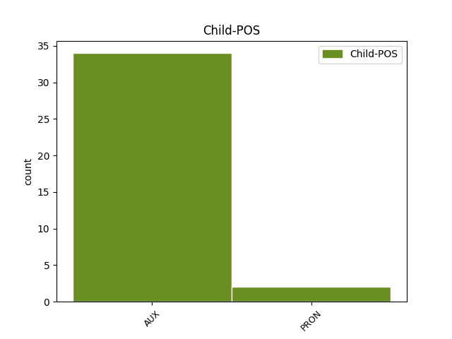

Distribution of features within this leaf



Agreement Rules sorted by frequency.
- When the dependent token is the subject(subj) of the head token, and the head token is VERB and the dependent token is PRON.
1 Arvesta _ _ _ _ 0 _ _ _
2 , _ _ _ _ 0 _ _ _
3 et _ _ _ _ 0 _ _ _
4 keskmine _ _ _ _ 0 _ _ _
5 selliste _ _ _ _ 0 _ _ _
6 toodete _ _ _ _ 0 _ _ _
7 koosteliini _ _ _ _ 0 _ _ _
8 kvaliteeditase _ _ _ _ 0 _ _ _
9 on _ _ _ _ 0 _ _ _
10 98 _ _ _ _ 0 _ _ _
11 % _ _ _ _ 0 _ _ _
12 mis _ _ _ _ 0 _ _ _
13 tähendab _ _ _ _ 0 _ _ _
14 et _ _ _ _ 0 _ _ _
15 igast _ _ _ _ 0 _ _ _
16 100st _ _ _ _ 0 _ _ _
17 2 _ _ _ _ 0 _ _ _
18 lähevad _ _ _ _ 0 _ _ _
19 liiini _ _ _ _ 0 _ _ _
20 tagumisest _ _ _ _ 0 _ _ _
21 otsast _ _ _ _ 0 _ _ _
22 kõrvale _ _ _ _ 0 _ _ _
23 ... _ _ _ _ 0 _ _ _
24 ja _ _ _ _ 0 _ _ _
25 kui _ _ _ _ 0 _ _ _
26 sa sina PRON P Case=Nom|Number=Sing|Person=2|PronType=Prs 27 subj _ _
27 arvad arvama VERB V Mood=Ind|Number=Sing|Person=2|Tense=Pres|VerbForm=Fin|Voice=Act 0 _ _ _
28 et _ _ _ _ 0 _ _ _
29 need _ _ _ _ 0 _ _ _
30 ka _ _ _ _ 0 _ _ _
31 kõrvale _ _ _ _ 0 _ _ _
32 jäävad _ _ _ _ 0 _ _ _
33 siis _ _ _ _ 0 _ _ _
34 eksid _ _ _ _ 0 _ _ _
35 . _ _ _ _ 0 _ _ _
1 Põhjus _ _ _ _ 0 _ _ _
2 , _ _ _ _ 0 _ _ _
3 miks _ _ _ _ 0 _ _ _
4 see _ _ _ _ 0 _ _ _
5 juba _ _ _ _ 0 _ _ _
6 toimunud _ _ _ _ 0 _ _ _
7 pole _ _ _ _ 0 _ _ _
8 , _ _ _ _ 0 _ _ _
9 on _ _ _ _ 0 _ _ _
10 selles _ _ _ _ 0 _ _ _
11 : _ _ _ _ 0 _ _ _
12 sa _ _ _ _ 0 _ _ _
13 ei _ _ _ _ 0 _ _ _
14 ole _ _ _ _ 0 _ _ _
15 osanud _ _ _ _ 0 _ _ _
16 kuskilt _ _ _ _ 0 _ _ _
17 alustada _ _ _ _ 0 _ _ _
18 ... _ _ _ _ 0 _ _ _
19 sul _ _ _ _ 0 _ _ _
20 pole _ _ _ _ 0 _ _ _
21 olnud _ _ _ _ 0 _ _ _
22 tuge _ _ _ _ 0 _ _ _
23 , _ _ _ _ 0 _ _ _
24 kui _ _ _ _ 0 _ _ _
25 sa sina PRON P Case=Nom|Number=Sing|Person=2|PronType=Prs 30 subj _ _
26 seda _ _ _ _ 0 _ _ _
27 kõige _ _ _ _ 0 _ _ _
28 rohkem _ _ _ _ 0 _ _ _
29 vajanud _ _ _ _ 0 _ _ _
30 oled olema AUX V Mood=Ind|Number=Sing|Person=2|Tense=Pres|VerbForm=Fin|Voice=Act 0 _ _ _
31 . _ _ _ _ 0 _ _ _
1 Tunnista _ _ _ _ 0 _ _ _
2 fronius _ _ _ _ 0 _ _ _
3 , _ _ _ _ 0 _ _ _
4 et _ _ _ _ 0 _ _ _
5 võta _ _ _ _ 0 _ _ _
6 mis _ _ _ _ 0 _ _ _
7 klots _ _ _ _ 0 _ _ _
8 tahes _ _ _ _ 0 _ _ _
9 kuid _ _ _ _ 0 _ _ _
10 ühest _ _ _ _ 0 _ _ _
11 nurgast _ _ _ _ 0 _ _ _
12 on olema AUX V Mood=Ind|Number=Plur|Person=3|Tense=Pres|VerbForm=Fin|Voice=Act 0 _ _ _
13 nad tema PRON P Case=Nom|Number=Plur|Person=3|PronType=Prs 12 subj@cop _ _
14 kõik _ _ _ _ 0 _ _ _
15 pahnad _ _ _ _ 0 _ _ _
16 :D _ _ _ _ 0 _ _ _
1 Elan elama VERB V Mood=Ind|Number=Sing|Person=1|Tense=Pres|VerbForm=Fin|Voice=Act 0 _ _ _
2 üksi _ _ _ _ 0 _ _ _
3 ja _ _ _ _ 0 _ _ _
4 mul mina PRON P Case=Ade|Number=Sing|Person=1|PronType=Prs 1 conj _ _
5 külakese _ _ _ _ 0 _ _ _
6 suurim _ _ _ _ 0 _ _ _
7 konteiner _ _ _ _ 0 _ _ _
8 , _ _ _ _ 0 _ _ _
9 mida _ _ _ _ 0 _ _ _
10 väiksest _ _ _ _ 0 _ _ _
11 pinsist _ _ _ _ 0 _ _ _
12 täidetud _ _ _ _ 0 _ _ _
13 ei _ _ _ _ 0 _ _ _
14 saa _ _ _ _ 0 _ _ _
15 , _ _ _ _ 0 _ _ _
16 kui _ _ _ _ 0 _ _ _
17 prügiauto _ _ _ _ 0 _ _ _
18 kohale _ _ _ _ 0 _ _ _
19 tuleb _ _ _ _ 0 _ _ _
20 . _ _ _ _ 0 _ _ _
1 Ja _ _ _ _ 0 _ _ _
2 see _ _ _ _ 0 _ _ _
3 et _ _ _ _ 0 _ _ _
4 ta tema PRON P Case=Nom|Number=Sing|Person=3|PronType=Prs 8 mod _ _
5 " _ _ _ _ 0 _ _ _
6 äraarvamismängu _ _ _ _ 0 _ _ _
7 " _ _ _ _ 0 _ _ _
8 mängis mängima VERB V Mood=Ind|Number=Sing|Person=3|Tense=Past|VerbForm=Fin|Voice=Act 0 _ _ _
9 algul _ _ _ _ 0 _ _ _
10 , _ _ _ _ 0 _ _ _
11 näitab _ _ _ _ 0 _ _ _
12 pigem _ _ _ _ 0 _ _ _
13 tema _ _ _ _ 0 _ _ _
14 võimete _ _ _ _ 0 _ _ _
15 tagasihoidlikust _ _ _ _ 0 _ _ _
16 . _ _ _ _ 0 _ _ _
Disagree Examples:
1 Et _ _ _ _ 0 _ _ _
2 ärgu ära AUX V Mood=Imp|Number=Plur|Person=3|Polarity=Neg|Tense=Pres|VerbForm=Fin|Voice=Act 0 _ _ _
3 ma mina PRON P Case=Nom|Number=Sing|Person=1|PronType=Prs 2 subj _ _
4 solvugu _ _ _ _ 0 _ _ _
5 aga _ _ _ _ 0 _ _ _
6 nii _ _ _ _ 0 _ _ _
7 on _ _ _ _ 0 _ _ _
8 ja _ _ _ _ 0 _ _ _
9 küll _ _ _ _ 0 _ _ _
10 siis _ _ _ _ 0 _ _ _
11 saab _ _ _ _ 0 _ _ _
12 jälle _ _ _ _ 0 _ _ _
13 kõik _ _ _ _ 0 _ _ _
14 korda _ _ _ _ 0 _ _ _
15 ja _ _ _ _ 0 _ _ _
16 ma _ _ _ _ 0 _ _ _
17 saan _ _ _ _ 0 _ _ _
18 hakkama _ _ _ _ 0 _ _ _
19 . _ _ _ _ 0 _ _ _
1 Kuna _ _ _ _ 0 _ _ _
2 meil _ _ _ _ 0 _ _ _
3 koorus _ _ _ _ 0 _ _ _
4 jutt _ _ _ _ 0 _ _ _
5 välja _ _ _ _ 0 _ _ _
6 viimasest _ _ _ _ 0 _ _ _
7 vestlusest _ _ _ _ 0 _ _ _
8 ja _ _ _ _ 0 _ _ _
9 sa sina PRON P Case=Nom|Number=Sing|Person=2|PronType=Prs 14 subj _ _
10 nii _ _ _ _ 0 _ _ _
11 otse _ _ _ _ 0 _ _ _
12 ja _ _ _ _ 0 _ _ _
13 omadega _ _ _ _ 0 _ _ _
14 väitsid väitma VERB V Mood=Ind|Number=Plur|Person=3|Tense=Past|VerbForm=Fin|Voice=Act 0 _ _ _
15 seda _ _ _ _ 0 _ _ _
16 ja _ _ _ _ 0 _ _ _
17 veel _ _ _ _ 0 _ _ _
18 ilma _ _ _ _ 0 _ _ _
19 lisakommentaarideta _ _ _ _ 0 _ _ _
20 , _ _ _ _ 0 _ _ _
21 siis _ _ _ _ 0 _ _ _
22 moslemite _ _ _ _ 0 _ _ _
23 vihapurse _ _ _ _ 0 _ _ _
24 demokraatia _ _ _ _ 0 _ _ _
25 - _ _ _ _ 0 _ _ _
26 vabaduse _ _ _ _ 0 _ _ _
27 alusmüüride _ _ _ _ 0 _ _ _
28 vastu _ _ _ _ 0 _ _ _
29 küll _ _ _ _ 0 _ _ _
30 mingi _ _ _ _ 0 _ _ _
31 Jumala _ _ _ _ 0 _ _ _
32 väeilming _ _ _ _ 0 _ _ _
33 ei _ _ _ _ 0 _ _ _
34 olnud _ _ _ _ 0 _ _ _
35 ! _ _ _ _ 0 _ _ _